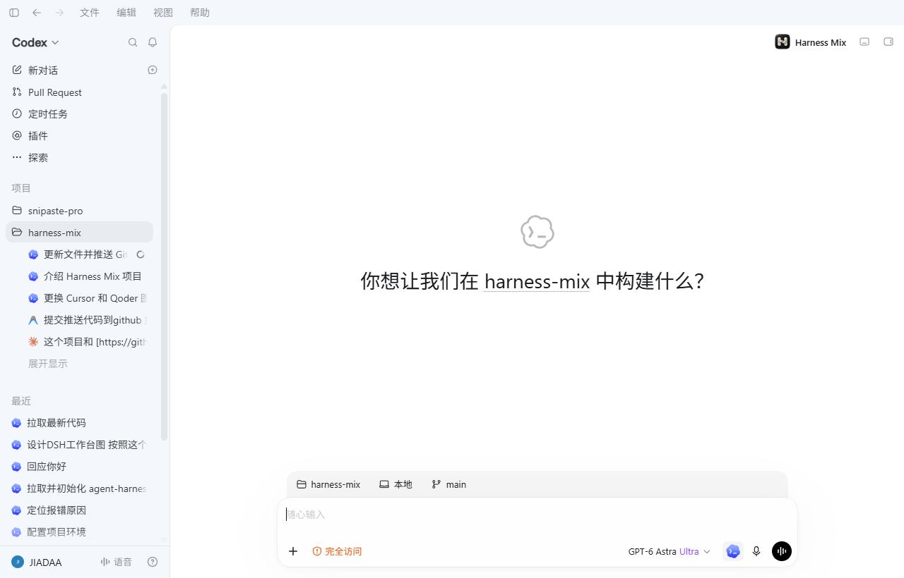

接入官方 Codex Desktop 原生界面，把 Antigravity、Codex、Claude Code、Pi、DeepSeek、Cursor CLI 等 17 个原生 Coding Harness 汇聚到同一套 UI，并让任务在它们之间无缝接力。

只有本机已安装且握手成功的 Harness 才会进入真实运行；模型调用、工具执行、原生会话与凭据始终由各 Harness 自己管理。
跨 Harness 接力、多 Agent 协同、原生 Skills / MCP 管理——所有能力严格在各 Adapter manifest 中诚实声明，界面按真实能力渲染。
继续执行 / 执行计划 / 独立审查 / 重新分析四种接力模式，对话历史、代码改动与 Git 状态完整保留，带哈希的持久化检查点支持随时暂停恢复。
输入 # 唤起协同菜单，一个 Lead 可组织最多六个并发具名成员，支持循环审查验证、子任务级联取消与超时熔断。
全量覆盖 17 个 Harness 原生技能目录，SKILL.md 或完整文件夹直接拖拽安装，Global / Project 作用域无缝切换。
本地 stdio 与远程 Streamable HTTP / SSE 协议均支持，可自定义 Header 传递，按 Harness 独立生效。
一键导入 Pi / Claude / Codex / CodeBuddy 原生历史并可中断续跑，# 引用任意旧会话注入脱敏上下文。
内置 Miku、Genshin Night、Deepspace Star 等多套主题，亮暗色全界面覆盖，自动对比度保护深色可读性。
完整接入 Codex 会话排队机制：增删改查、排序、插队抢占与自动排空，当前回合完成后顺序调度。
任务级 off / advisory / required 策略，内置一致性检查与自定义验证命令，强制模式保护隔离分支合并推送。
schema v3 分片惰性加载、无损紧凑存储、迁移备份与体积诊断，冷启动只读任务索引。
失败回合归类为连接 / 登录 / 额度 / 被拒 / 服务异常五类，无法归类时诚实标注 unknown，并给出重试、去登录等动作建议。
安全脱敏提取当前会话上下文，一键生成结构化草稿并直通注入 ChatGPT，实现跨工具协作。
Codex 多账户隔离与即时切换，实时追踪 Token / Credits 用量，各 Harness 凭据、模型与审批原生自理。
需要 Windows、macOS 或 Linux，近期 Node.js LTS 和 npm。应用不读取、不保存 Harness 的账户密钥，请先在对应原生 CLI 中完成安装与登录。
npm install --global @harness-mix/cli harness-mix
首次运行会重启已打开的 Codex Desktop，随后 Harness Mix 以原生扩展入口出现。
git clone https://github.com/emo-xiaoyu/harness-mix.git cd harness-mix npm install npm start
macOS / Linux 已支持源码构建与启动，详见跨平台指南。
# 示例：Codex npm install -g @openai/codex # 示例：Cline npm i -g cline && cline auth
各 Harness 的 CLI、登录状态、模型额度需在本机单独安装配置，Harness Mix 不代管凭据。